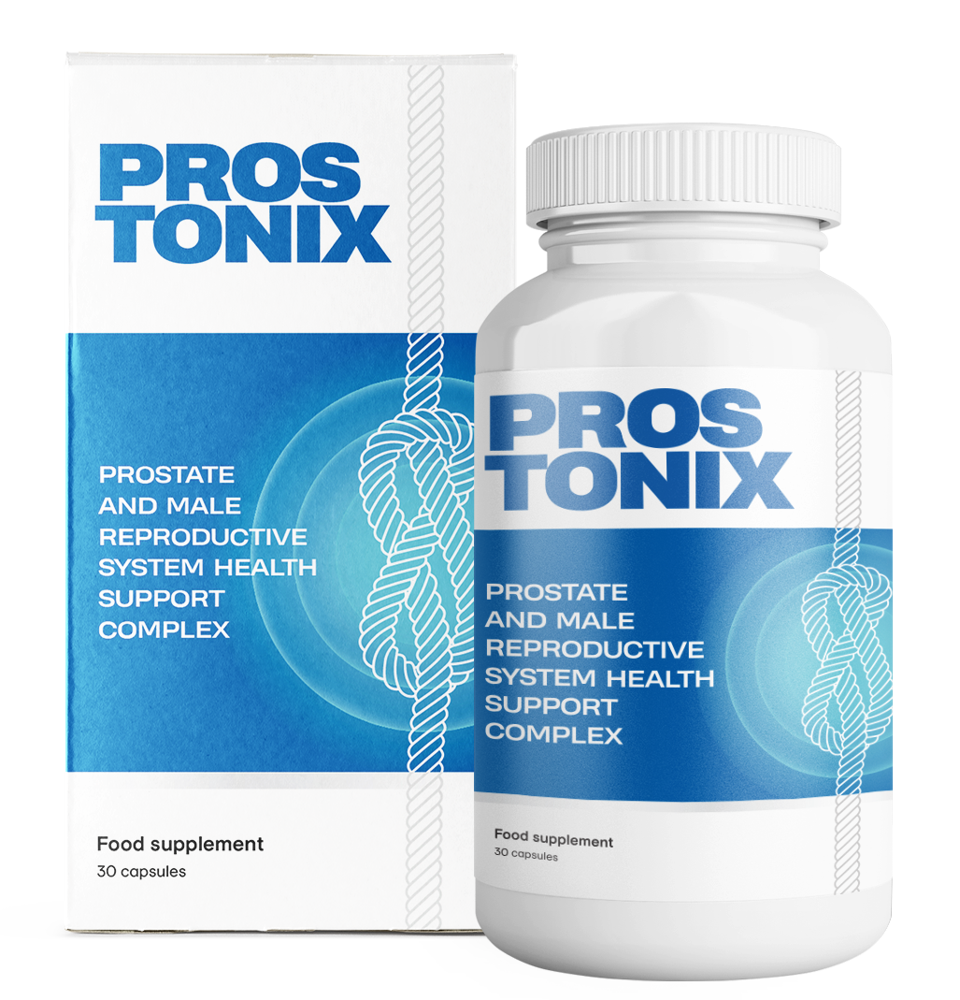

Η προστατίτιδα δεν είναι θανατική ποινή! Αυτό κατέστρεψε την οικογένειά μου, σκότωσε την υγεία μου, αλλά κατάφερα να νικήσω!
Γεια σας, αγαπητοί αναγνώστες του ιστολογίου μου. Για όσους δεν με ξέρουν, θα συστηθώ - με λένε Αλέξανδρος Σταθόπουλος, είμαι 49 ετών, δουλεύω ως προγραμματιστής όλη μου τη ζωή και τώρα εργάζομαι ήδη ως επικεφαλής του τμήματος ασφάλειας υπολογιστών. Αλλά σήμερα θέλω να σας μιλήσω όχι για το προγραμματισμό, αλλά για την υγεία. Συγκεκριμένα, σχετικά με την υγεία των ανδρών, δηλαδή την προστατίτιδα.
Αντιμετώπισα αυτό το πρόβλημα τον περασμένο Ιανουάριο. Εξαιτίας αυτής της ασθένειας, η γυναίκα μου με άφησε και κόντεψα να χάσω τη δουλειά μου. Αλλά κατάφερα να ξεπεράσω την ασθένεια και τώρα θέλω να μοιραστώ την ιστορία μου μαζί σας, ίσως μπορώ να βοηθήσω κάποιον. Ξέρω ότι πολλοί άντρες υποφέρουν από αυτή τη νόσο, απλά δεν συνηθίζεται να μιλάμε για αυτό το πρόβλημα ανοιχτά.
Έναρξη της νόσου
Όπως γνωρίζετε, οι προγραμματιστές και οι υπάλληλοι γραφείου, μαζί με τους οδηγούς, υποφέρουν από την προστατίτιδα πιο συχνά από άλλους, λόγω της καθιστικής ζωής και στασιμότητας του αίματος στην πύελο - έτσι μου το εξήγησε ο γιατρός. Εκτός όμως από την καθιστική ζωή, είχα περάσει και γρίπη.
Όλα ξεκίνησαν με την συχνοουρία, κάθε επίσκεψη στην τουαλέτα ήταν ένα πραγματικό μαρτύριο - πόνος, τσούξιμο, μερικές φορές μέχρι δακρύων... Το άντεξα, όπως πολλοί, μέχρι τέλους. Για το σεξ με τη γυναίκα μου ούτε συζήτηση, η ισχύς εξασθένησε και δεν είχα καμία ψυχική διάθεση. Άρχισαν οι συγκρούσεις και τα σκάνδαλα. Σύντομα τσακωθήκαμε και η γυναίκα μου με άφησε.
Όταν ο πυρετός ανέβηκε και ο πόνος στο κάτω μέρος της κοιλιάς έγινε αφόρητος, έπρεπε να καλέσουμε ασθενοφόρο. Μεταφέρθηκα στο νοσοκομείο. Εκεί αποδείχθηκε ότι η χρόνια προστατίτιδα είχε επιδεινωθεί. Μου έβαλαν ενδοφλέβια, μου έκαναν ενέσεις, βασικά με περιποιήθηκαν και με έστειλαν στο σπίτι.
Ο γιατρός συνταγογράφησε ένα σωρό διαφορετικά φάρμακα, ξόδεψα όλες μου τις οικονομίες σε αυτά και ήμουν πεπεισμένος πως όλα αυτά σίγουρα θα με βοηθούσαν. Όμως πέρασαν μόνο δύο μήνες και η προστατίτιδα με χτύπησε με ανανεωμένο σθένος.
Στο επόμενο ραντεβού μου, οι γιατροί με τρόμαξαν πραγματικά, λέγοντας ότι τα φλεγμονώδη, άρρωστα κύτταρα του προστάτη θα μπορούσαν να μετατραπούν σε καρκίνο.
Ο γιατρός μου πρότεινε μασάζ προστάτη και φυσικοθεραπεία. Έπρεπε να ξεπεράσω την αμηχανία, την ντροπή μου και να υποβληθώ σε 10 εξευτελιστικές διαδικασίες. Αλλά, δυστυχώς, τίποτα από αυτά δεν με βοήθησε, έγινε λίγο πιο ανώδυνο, αλλά με μικρό κρυολόγημα, η ασθένεια επέστρεψε με νέες εκπλήξεις - η ισχύς μου εξαφανίστηκε και η φλεγμονή έγινε ακόμα πιο ισχυρή, εξαιτίας αυτού απλά δεν μπορούσα να κοιμηθώ και φοβόμουν να πάω στην τουαλέτα.
Η διάσωση των πνιγμένων είναι έργο των ίδιων των πνιγμένων
Απευθύνθηκα στους προγραμματιστές συναδέλφους μου, σε ένα διεθνές φόρουμ και μίλησα ειλικρινά για το πρόβλημά μου. Στο φόρουμ επικοινώνησα με ανθρώπους από τις ΗΠΑ, το Ισραήλ, τη Γερμανία και άλλες ευρωπαϊκές χώρες.
Αποδείχθηκε πως πολλοί από τους ανθρώπους δικής μας ειδικότητας, υπέφεραν από αυτή την ασθένεια. Αλλά έμειναν έκπληκτοι από τις μεθόδους της θεραπείας μου. Σε πολλούς φάνηκαν ξεπερασμένοι. Παραδόξως, άνθρωποι από διαφορετικές χώρες ομόφωνα, σαν να συμφωνούσαν, με συμβούλεψαν την ίδια θεραπεία - το Prostonix. Δεν το είχα ξανακούσει, ούτε το είχα δει στα φαρμακεία. Δεν μου το συνέστησε ούτε ένας γιατρός ή φαρμακοποιός.
Βρήκα πολλές πληροφορίες σχετικά με αυτό στο Διαδίκτυο και ανακάλυψα ότι το προϊόν είναι πραγματικά ισχυρό. Παλαιότερα, όταν έψαχνα για πληροφορίες σχετικά με τους φυσικούς τρόπους θεραπείας της προστατίτιδας, συνέταξα μια λίστα με φυτά που χρησιμοποιούνται σε διάφορες χώρες για την ανακούφιση από τον πόνο και τη φλεγμονή στον προστάτη. Και πόσο ξαφνιάστηκα όταν είδα τα φυτά από αυτή τη λίστα στο προϊόν Prostonix.
Αποδείχθηκε ότι αυτό το προϊόν περιέχει τα ισχυρότερα φυσικά συστατικά, που καταπολεμούν ακόμη και την προχωρημένη προστατίτιδα. Και σε συνδυασμό, ενισχύουν τη δράση τους, γεγονός που σας επιτρέπει να απαλλαγείτε από την προστατίτιδα σε μόνο μια ολοκληρωμένη θεραπεία. Το προϊόν περιέχει:
- Μπρόκολο — περιέχει βιταμίνες A, K, E, B, PP, καθώς και ψευδάργυρο, ασβέστιο και μαγνήσιο, το οποίο αυξάνει τα επίπεδα της τεστοστερόνης.
- Πράσινο τσάι — έχει ισχυρή επίδραση στη ροή του αίματος στα όργανα της πυέλου - που είναι απαραίτητο για να εξασφαλιστεί η υψηλής ποιότητας και η μακροπρόθεσμη δραστικότητα.
- Saw Palmetto ή αλλιώς Serenoa — διεγείρει τη ροή του αίματος στη λεκάνη και έχει ευεργετική επίδραση στον αδένα του προστάτη. Εξαλείφει τη φλεγμονή, τον πόνο και το κάψιμο κατά την ούρηση.
- Κράνμπερι (Cranberry) — καταστρέφει τα βακτήρια, κάτι που είναι ιδιαίτερα σημαντικό για μια ασθένεια όπως η βακτηριακή προστατίτιδα.
Τα παιδιά στο φόρουμ μου έλεγαν - πως απαλλάχτηκαν από την προστατίτιδα σε μία μόνο πορεία χρήσης του Prostonix. Η σωτηρία βρέθηκε. Το μόνο που έμενε ήταν να αγοράσω αυτό το προϊόν. Αλλά μετά με περίμενε μια έκπληξη· δεν μπορούσα να το βρω στα φαρμακεία και δεν υπήρχε καν διαθέσιμο πουθενά για να το παραγγείλω. Και πάλι, χάρη στα παιδιά, που μου έδωσαν έναν σύνδεσμο για την επίσημη φόρμα παραγγελίας από τον κατασκευαστή, όπου μπόρεσα να παραγγείλω το προϊόν Prostonix χωρίς το ΦΠΑ του φαρμακείου.
Χρησιμοποιούσα το Prostonix σύμφωνα με τις οδηγίες χρήσης και ήδη την τρίτη μέρα μπορούσα να πάω στην τουαλέτα κανονικά, χωρίς πόνο. Μετά από ένα μήνα ξέχασα εντελώς ότι είχα προστατίτιδα.
Σταμάτησα να ξυπνάω στη μέση της νύχτας για να πάω στην τουαλέτα, ο πόνος στη βουβωνική χώρα έφυγε, η δυναμικότητα επέστρεψε και η στύση μου έγινε πιο δυνατή από πριν! Ήταν καταπληκτικό συναίσθημα, κατάλαβα ότι ξαναζούσα!
Πήρα τηλέφωνο τη γυναίκα μου και την κάλεσα στο εστιατόριο. Τα ξαναβρήκαμε και ζούμε ξανά μαζί. Δεν θυμάμαι πια την προστατίτιδα, την ξέχασα σαν κακό όνειρο!
Είπα την ιστορία μου, γιατί ξέρω πώς είναι να υποφέρεις από το συνεχή πόνο, να τρέχεις συνεχώς στην τουαλέτα, να χάνεις την ισχύ και να χάνεις την αυτοπεποίθηση. Θέλω να σας βοηθήσω, αν αντιμετωπίζετε αυτή την ασθένεια.
Όσο το Prostonix είναι ακόμα σε προσφορά! Επιπλέον, ο κατασκευαστής συμμετέχει στο πρόγραμμα Men's Health και μπορείτε να το αποκτήσετε στο πλαίσιο του προγράμματος με έκπτωση 50%.
Βιαστείτε, το πρόγραμμα θα ολοκληρωθεί σύντομα, η προσφορά θα διαρκέσει έως και τις . Μη χάσετε την ευκαιρία να απαλλαγείτε για πάντα από την προστατίτιδα!
Για να αποκτήσετε το Prostonix με έκπτωση, συμπληρώστε την επίσημη φόρμα παραγγελίας παρακάτω και στη συνέχεια ένας σύμβουλος θα επικοινωνήσει μαζί σας, για να υπολογίσει την τιμή για εσάς και να απαντήσει σε όλες τις ερωτήσεις σας.
ΠΡΟΣΟΧΗ! Προσοχή στις απομιμήσεις!
Προϊόν στην Ελλάδα μπορεί να αποκτηθεί μόνο με τη συμπλήρωση της επίσημης φόρμας παραγγελίας.